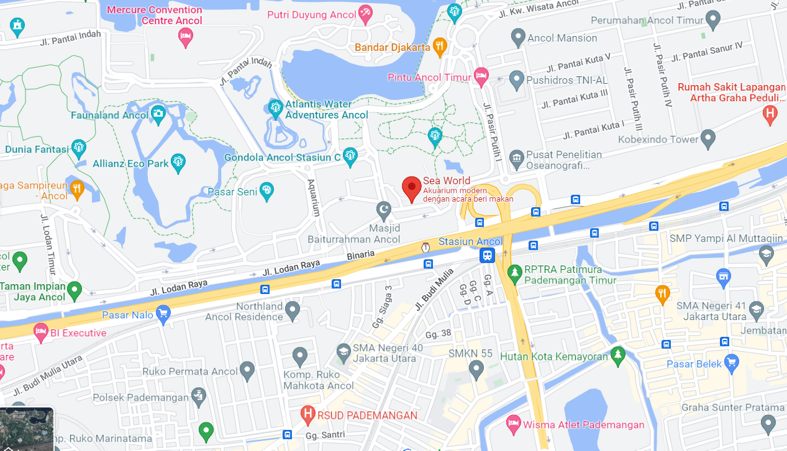
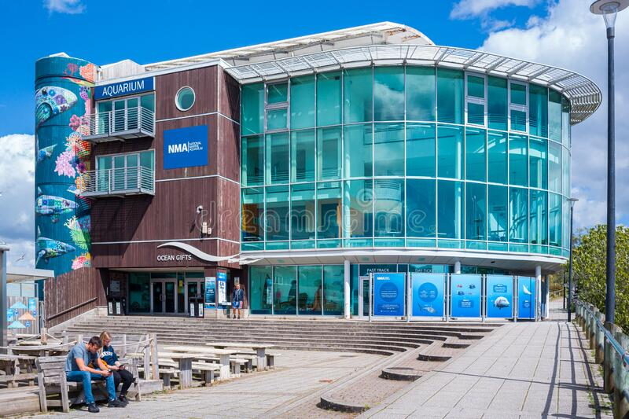
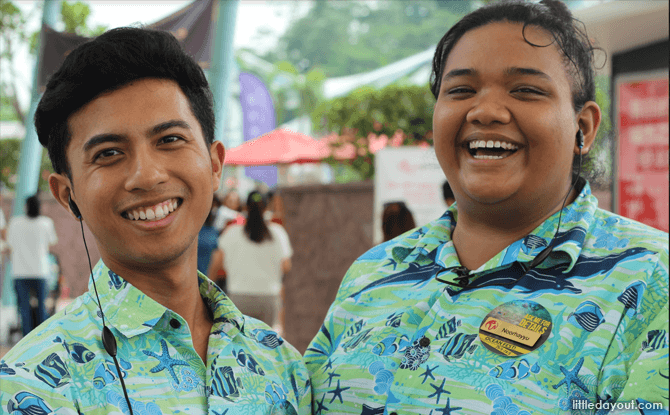

Our beautiful aquarium is located on "Jl. Lodan Timur No.7, RW.10, Ancol, Kec. Pademangan
, Kota Jkt Utara, Daerah Khusus Ibukota Jakarta 14430". You can browse this location on
google maps
for more details.
It’s located just few kilometres to the right of Dunia
Fantasi, and on the northwest of Wisma Atlet Pademangan.
Location

History

Piscis Aquarium was built on 1997 and has always been going and improving since. Our founder
and first CEO, Albert Hartanto was striving to entertain people and to be a bridge for people
who wants to see the wildlife of marine animals whether for its amusement, knowledge, beauty,
or all of them. To reach that goal, of course we need to preserve and do the best to take
care of these precious marine animals in which not little of them are endangered in the wild.
Holding on to these 2 principles and expanding our aquarium with them, we have been one of
the most successful marine animals aquarium attraction until today.
Employement

Do you want to participate in preserving the wild marine life while directly
(or undirectly) taking care of them? Want to become part of Piscis Aquarium family?
You can apply and send your cv to example@gmail.com or reach +62123123123.
We train our family to carefully handle marine animals while keeping the place a good
and beautiful aquarium for everyone to enjoy!